Tema 3.B.43
El origen del euro: funcionamiento y evolución del Sistema Monetario Europeo. Los criterios de convergencia nominal. El Sistema Europeo de Bancos Centrales: objetivos e instrumentos. La política monetaria en la Eurozona desde 2009.
Serpiente y SME, Maastricht y criterios de convergencia, SEBC y estrategia del BCE, instrumentos, OMT y TPI, y la política monetaria del euro desde 2009.
Exclusivo Material exclusivo de victorgutierrezmarcos.es y la app Oposición TCEE · DCE. Puedes usarlo libremente para tu estudio personal. No se autoriza su incorporación a otras plataformas, aplicaciones o servicios. Condiciones de uso.
Introducción
Enganche:
«Cría fama y échate a dormir», dice el refrán. El 26 de julio de 2012, con la prima de riesgo española por encima de los 550 puntos básicos, Mario Draghi dijo en Londres que el BCE haría «lo que sea necesario» para preservar el euro, «y créanme, será suficiente». Las primas empezaron a bajar sin que el BCE comprara un solo bono: le bastó la fama.
14 años después, el euro es la moneda de 21 Estados y de más de 350 millones de personas, y el BCE ha vuelto a subir los tipos en 2026 ante un nuevo encarecimiento de la energía: la facilidad de depósito está en el 2,50 % desde el 16 de septiembre.
La pregunta que recorre la exposición es: ¿por qué renunciaron los europeos a sus monedas y cómo ha aprendido el BCE a ganarse, y a conservar, la fama de que el euro es para siempre?
Relevancia:
Es la integración monetaria más ambiciosa entre Estados soberanos: una moneda y un banco central comunes sin un presupuesto ni un Tesoro comunes.
El euro es la segunda moneda del mundo: en torno a una quinta parte de las reservas de divisas, y la Unión quiere desde 2025 que gane peso (II.4).
Para España: la política monetaria se decide en Fráncfort desde 1999, con el Banco de España en el Consejo de Gobierno; el euro trajo tipos de interés bajos y estables, pero también el auge del crédito y la crisis de 2010-2012 [ver tema 4.A.27] [ver tema 4.A.28].
Contextualización:
Qué es: el euro es la moneda única de la Unión Económica y Monetaria (UEM), que nace el 1 de enero de 1999 con 11 Estados y circula en billetes y monedas desde 2002. Su política monetaria la decide el Eurosistema, el BCE y los bancos centrales de los Estados que lo han adoptado.
De dónde viene: tras la caída de Bretton Woods, Europa buscó estabilidad cambiaria, primero con la serpiente (1972) y después con el Sistema Monetario Europeo (SME, 1979). El mercado único y la libertad de capitales llevaron al Informe Delors (1989) y al Tratado de Maastricht (1992), que fijó las fases y los criterios de entrada.
Su teoría: la de las áreas monetarias óptimas de Robert Mundell (1961)1 y sus sucesores, que dice cuándo compensa renunciar al tipo de cambio [ver tema 3.B.16]. Aquí se estudia la historia, las instituciones y la política del euro.
Lo que no se trata aquí: la unión bancaria [ver tema 3.B.44] y la gobernanza fiscal (reglas, Semestre Europeo, MEDE y la respuesta fiscal a la Covid) [ver tema 3.B.45].
Problemática:
¿Por qué fracasaron la serpiente y el SME, y qué aprendió Europa de ellos?
¿Qué se exigió para entrar en el euro y qué se sigue exigiendo?
¿Qué objetivo tiene el BCE, quién decide y con qué instrumentos?
¿Cómo ha respondido a la crisis de deuda, a la deflación, a la pandemia y a la inflación, y puede una sola política monetaria servir a 21 economías distintas?
Estructura:
La exposición sigue el orden del tiempo y va de las reglas a su aplicación:
I. Del SME al euro (I): la serpiente, el SME y su asimetría, Maastricht y los criterios de convergencia nominal.
II. El Sistema Europeo de Bancos Centrales (II): instituciones, objetivo y estrategia, instrumentos y papel internacional del euro.
III. La política monetaria desde 2009 (III): la crisis de deuda, la expansión cuantitativa, la pandemia, la inflación y el problema de la «talla única».
3.B.43. El euro, el SME y el BCE
Introducción2′30″
I. Del Sistema Monetario Europeo al euro8′
1. De Bretton Woods a la serpiente monetaria
2. El Sistema Monetario Europeo (1979-1998)
3. El camino a la UEM: Delors, Maastricht y las 3 fases
4. Los criterios de convergencia nominal
II. El Sistema Europeo de Bancos Centrales9′30″
1. El marco institucional
2. El objetivo y la estrategia
3. Los instrumentos
4. El papel internacional del euro
III. La política monetaria en la zona del euro desde 20099′
1. La crisis de la deuda soberana (2009-2014)
2. Deflación y expansión cuantitativa (2014-2019)
3. Pandemia, inflación y normalización (2020-2026)
4. Una política para 21 economías: la «talla única»
Conclusión1′
Reparto del cante: introducción, 2′30″; I, 8′ (I.1, 1′; I.2, 4′, de ellos 2′ para el modelo de la asimetría; I.3, 1′30″; I.4, 1′30″); II, 9′30″ (II.1, 3′, con los 3 órganos rectores y la rotación; II.2, 2′; II.3, 2′30″; II.4, 2′); III, 9′ (III.1, 4′, de ellos 2′30″ para el modelo de la crisis autocumplida; III.2, 1′30″; III.3, 1′30″; III.4, 2′), y conclusión, 1′. Los gráficos y figuras imprescindibles son la serpiente, el de la asimetría del SME, el de los tipos del BCE, el de la crisis autocumplida y el de la talla única, y la infografía de la rotación de votos; el balance, la inflación y los diferenciales se enseñan como apoyo. Lo que va en cajas grises, en notas y en los anexos es para las preguntas del tribunal.
Notación. En el modelo de la asimetría del SME, \(i_A\) e \(i_B\) son los tipos de interés del país ancla (A) y de otro país del sistema (B), \(\delta^e\) la devaluación esperada de B (más su prima de riesgo), y \(M_j\), \(P_j\) y \(L_j\) la oferta de dinero, los precios y la demanda de dinero de cada país. En el de la crisis autocumplida, \(B\) es la deuda que vence, \(i\) su tipo de interés, \(r\) el tipo sin riesgo, \(\bar S\) el superávit primario máximo que el Estado puede reunir, \(p\) la probabilidad de impago y \(p^e\) la que esperan los inversores; \(\kappa\equiv(1+r)B/\bar S\) resume los fundamentos. En la regla de Taylor, \(i\) es el tipo oficial, \(\pi\) la inflación, \(\pi^*=2\) % el objetivo, \(x\) la brecha de producción y \(r^*\) el tipo real neutral; el subíndice \(j\) denota cada Estado y la barra, la media de la zona del euro.
I. Del Sistema Monetario Europeo al euro
Empezamos por el origen del euro, porque sus reglas actuales son la respuesta a lo que falló antes: tipos de cambio que no aguantaban y una política monetaria que en la práctica decidía un solo país.
Conclusión anticipada: Europa pasó de la cooperación cambiaria (la serpiente y el SME) a la unión monetaria porque, con libertad de capitales, un sistema de tipos fijos pero ajustables era frágil y asimétrico. Maastricht puso precio a la entrada con los criterios de convergencia nominal.
I.1. De Bretton Woods a la serpiente monetaria
El problema: el mercado común necesitaba tipos de cambio estables (la política agrícola común fijaba sus precios en una unidad de cuenta común) y Bretton Woods se tambaleaba a finales de los 60 [ver tema 3.B.20].
El primer proyecto: el Plan Barre (memorando de la Comisión de 1969) y la cumbre de La Haya (diciembre de 1969) encargaron a un grupo presidido por el primer ministro luxemburgués Pierre Werner un plan de unión económica y monetaria. El Informe Werner (octubre de 1970) proponía llegar a ella en 3 etapas antes de 1980. Lo enterraron la crisis del dólar y la de 1973.
La serpiente (gráfico 1):
tras el Acuerdo Smithsoniano (diciembre de 1971), cada moneda podía oscilar un \(\pm2{,}25\) % frente al dólar, de modo que 2 monedas europeas podían separarse hasta un 4,5 %: el túnel;
en abril de 1972 (en funcionamiento desde el 24), los bancos centrales de la Comunidad acordaron en Basilea que sus monedas no se separaran entre sí más de un 2,25 %: la serpiente en el túnel;
en marzo de 1973 las monedas europeas dejaron de defender el dólar y siguió solo la serpiente: la serpiente en el lago. El 6 de abril de 1973 se creó el Fondo Europeo de Cooperación Monetaria (FECOM) para gestionar los créditos entre bancos centrales.
Su fracaso: la libra salió a los 2 meses (junio de 1972), la lira en febrero de 1973 y el franco francés en enero de 1974 y, tras volver en 1975, en marzo de 1976. Quedó un área del marco alemán con el Benelux y Dinamarca. Le faltaban 2 cosas: coordinación de las políticas, con inflaciones muy distintas tras la crisis del petróleo, y un mecanismo común de apoyo.
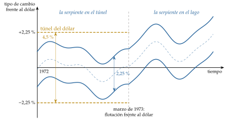
Fuente: elaboración propia. Esquema, no datos: los bordes de la serpiente son la moneda más fuerte y la más débil de la Comunidad, que no podían separarse más de un 2,25 %.
I.2. El Sistema Monetario Europeo (1979-1998)
I.2.1. Origen, objetivos y funcionamiento
Origen: lo impulsaron Valéry Giscard d’Estaing y Helmut Schmidt. Francia quería estabilizar su moneda y su inflación; Alemania, que las devaluaciones de sus vecinos no le restaran competitividad y no tener que revaluar sola el marco. Empezó a funcionar el 13 de marzo de 1979.
Objetivos: una «zona de estabilidad monetaria» en Europa: estabilidad cambiaria (externa) y convergencia de la inflación a la baja (interna).
Qué era: un sistema de tipos de cambio fijos pero ajustables (adjustable peg): paridades centrales con bandas de fluctuación, que se podían cambiar de común acuerdo (realineamientos) [ver tema 3.B.15]. Tenía 3 piezas:
El ECU (European Currency Unit): una cesta de las monedas de la Comunidad, en cantidades fijas de las 9 monedas (el marco pesaba un 33 % en 1979, el franco francés un 20 % y la libra un 13 %), revisadas cada 5 años. Era la unidad de cuenta del sistema y el denominador de las paridades centrales, lo que lo independizaba del dólar.2
El mecanismo de tipos de cambio (MTC): una parrilla de paridades bilaterales con bandas del \(\pm2{,}25\) % (\(\pm6\) % para la lira hasta enero de 1990, la peseta desde el 19 de junio de 1989, la libra en 1990-1992 y el escudo desde abril de 1992). En el límite, la intervención era obligatoria e ilimitada para los 2 bancos centrales, el de la moneda fuerte y el de la débil, en teoría un ajuste simétrico. Dentro de la banda se podía intervenir de forma voluntaria (intramarginal), guiada por un indicador de divergencia de cada moneda frente al ECU.3
La financiación: el FECOM daba créditos a muy corto plazo para intervenir y apoyo a corto y medio plazo para la balanza de pagos. En 1994 lo sustituyó el Instituto Monetario Europeo.
Su evolución, en 5 etapas:
1979-1983, inestable: el segundo choque del petróleo y políticas divergentes obligaron a realineamientos frecuentes (11 entre 1979 y 1987);
1983-1987, convergencia: Francia cambió de política en 1983 (el «giro del rigor») y anclarse al marco pasó a ser el instrumento de la desinflación;
1987-1992, el SME «duro»: los acuerdos de Basilea-Nyborg (septiembre de 1987) facilitaron la intervención intramarginal y los créditos, y los realineamientos casi desaparecieron (solo el de la lira en 1990); la peseta entró en el MTC en junio de 1989 y la libra en octubre de 1990;
1992-1993, la crisis (I.2.3);
1993-1998, bandas anchas: desde el 2 de agosto de 1993, un \(\pm15\) %, que tranquilizó a los mercados y llevó hasta la fijación de los tipos de conversión en 1999.
I.2.2. La asimetría del SME: el problema \(n-1\) y la hegemonía del marco
a) Idea
El SME se diseñó simétrico, pero funcionó como un área del marco: el Bundesbank fijaba su política monetaria pensando en Alemania y los demás le seguían. ¿Por qué?
Con \(n\) monedas solo hay \(n-1\) tipos de cambio independientes. Un sistema de tipos fijos tiene un grado de libertad de sobra, el problema \(n-1\) (redundancy problem): alguien tiene que fijar la política monetaria del conjunto, y en el SME lo hizo el banco central con más credibilidad.
b) Modelo
i) Supuestos
2 países: A, el ancla (Alemania), y B, cualquier otro (Francia, Italia, España).
Tipo de cambio fijo entre las 2 monedas, dentro de una banda, y libre movimiento de capitales (desde 1990): rige la paridad no cubierta de intereses [ver tema 3.B.14].
Precios rígidos a corto plazo y una demanda de dinero en cada país, \(M_j/P_j=L_j(Y_j,i_j)\), decreciente en el tipo de interés.
Asimetría en las reservas: el país de moneda débil pierde reservas al defender la paridad y estas se acaban; el de moneda fuerte las acumula y puede esterilizarlas sin límite.
ii) Desarrollo
Paso 1: la paridad de intereses. Con capitales libres, el tipo de B solo puede separarse del de A por la devaluación que se espera de B y su prima de riesgo, \(\delta^e\):
\[i_B=i_A+\delta^e\tag{1}\]
Con 2 tipos de interés y un solo tipo de cambio, solo uno de los 2 bancos centrales es libre.
Paso 2: A fija su política (gráfico 2, izquierda):
el Bundesbank elige su oferta monetaria \(M^S_A\) según la situación de Alemania;
con ella queda fijado \(i_A\).
Paso 3: B se adapta (gráfico 2, derecha):
su tipo queda fijado por (1);
su oferta de dinero se vuelve endógena: si el tipo de mercado se aleja de \(i_A+\delta^e\), entran o salen capitales, el banco central interviene y \(M^S_B\) se ajusta hasta donde lo pide su demanda de dinero.
Paso 4: una perturbación en el ancla. Si A contrae su política (\(M^S_A\to M^{S\prime}_A\), como tras la reunificación de 1990), sube \(i_A\); B tiene que subir el suyo y contraer su oferta, aunque su economía no lo necesite. Si además el mercado duda de la paridad, \(\delta^e\) sube y la contracción es mayor.
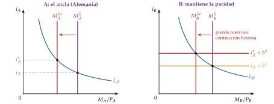
iii) Implicaciones
La asimetría es la regla, no la excepción: el país cuya moneda tiene más credibilidad (y cuyas reservas no se agotan) fija la política del sistema, como el dólar en Bretton Woods [ver tema 3.B.20].
Tiene una ventaja: los demás importan la credibilidad antiinflacionista del Bundesbank. Es el argumento de Giavazzi y Pagano (1988), «atarse las manos»: con el marco como ancla, Italia o Francia bajaban su inflación con menos coste en paro [ver tema 3.B.16].4
Y un coste: si la perturbación es asimétrica, la política del ancla no le sirve a B. Es lo que pasó en 1990-1992.
c) Extensiones
El ataque especulativo: si mantener \(i_B\) alto cuesta mucho paro, el mercado anticipa que B devaluará, \(\delta^e\) sube y la devaluación puede cumplir su propia profecía. Es el modelo de segunda generación de Obstfeld (1996), con su cláusula de escape: el gobierno abandona la paridad cuando el beneficio de devaluar supera el coste de hacerlo [ver tema 3.B.17].
La cooperación: una alternativa simétrica era decidir juntos el tipo de interés del sistema, pero sin instituciones comunes nadie podía comprometerse a ello.
d) Evidencia empírica
Giavazzi y Giovannini (1989) muestran que los tipos de interés alemanes influían en los franceses e italianos y no al revés, y que la intervención recaía casi siempre en los países de moneda débil.
Fratianni y Hagen (1990) matizan que la hegemonía no era completa: los tipos de los demás también influían en los alemanes.
La inflación convergió hacia la alemana: la diferencia entre la de Italia y la de Alemania bajó de más de 10 puntos en 1980 a unos 3 a finales de los 80.
e) Valoración
El modelo explica por qué el SME funcionó como un área del marco y por qué su punto débil era una perturbación en el propio ancla.
Pero una cosa es importar credibilidad y otra aceptar para siempre que otro decida: Francia e Italia querían «tener voz» en la política monetaria. La salida simétrica no era el SME, sino un banco central común: es el camino a Maastricht (I.3).
I.2.3. La crisis de 1992-1993
Las causas:
5 años sin realineamientos con inflaciones distintas: la lira, la peseta y la libra se habían apreciado en términos reales;
la reunificación alemana (1990): un gran gasto público en el Este y un Bundesbank que subió los tipos para frenar la inflación, cuando el resto de Europa entraba en recesión, la perturbación asimétrica del modelo;
la libertad de capitales completa desde julio de 1990;
las dudas sobre la UEM: el «no» danés a Maastricht (junio de 1992) y el «sí» por poco de Francia (septiembre de 1992).
Los hechos: el 16 de septiembre de 1992, el «miércoles negro», el Reino Unido suspendió la participación de la libra en el MTC, y la lira, devaluada un 3,5 % 3 días antes, dejó de defenderse; la peseta se devaluó un 5 % en septiembre de 1992, un 6 % el 22 de noviembre y un 8 % el 13 de mayo de 1993 (y un 7 % más el 6 de marzo de 1995: un 30 % frente al marco desde agosto de 1992), y Finlandia y Suecia, que mantenían su moneda unida al ECU sin estar en el MTC, la dejaron flotar.5
El desenlace: tras otro ataque contra el franco en julio de 1993, el 2 de agosto se ampliaron las bandas al \(\pm15\) %. El SME sobrevivió de nombre, ya sin tipos casi fijos. La lección fue que, con capitales libres, la estabilidad cambiaria exigía o flotar o compartir moneda: no había término medio estable [ver tema 3.B.15].
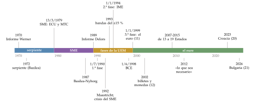
Fuente: elaboración propia a partir del Banco Central Europeo (2026h).
I.3. El camino a la UEM: Delors, Maastricht y las 3 fases
¿Por qué una moneda única?
Razones económicas: completar el mercado único (el Informe One market, one money de la Comisión, 1990, calculó el ahorro de costes de transacción y de incertidumbre); salir de la asimetría del SME, y resolver la «trinidad imposible» con capitales libres [ver tema 3.B.15].
Razones políticas: atar la Alemania reunificada a Europa y avanzar hacia la unión política; para Francia, recuperar voz sobre la política monetaria. El euro fue, ante todo, un proyecto político con instrumentos económicos.
El Informe Delors (abril de 1989): un comité de los gobernadores de los bancos centrales y 3 expertos, presidido por Jacques Delors, presidente de la Comisión, propuso la UEM en 3 fases. El Consejo Europeo de Madrid (junio de 1989) aprobó empezar la primera el 1 de julio de 1990.
El Tratado de Maastricht (firmado el 7 de febrero de 1992, en vigor el 1 de noviembre de 1993) la llevó al Tratado: el Banco Central Europeo independiente, con la estabilidad de precios como objetivo prioritario, los criterios de convergencia y un calendario.6
Las 3 fases:
Primera (1 de julio de 1990): libre movimiento de capitales y más coordinación; los Estados aprueban programas de convergencia y la independencia de sus bancos centrales (en España, la Ley 13/1994 de Autonomía del Banco de España) [ver tema 4.A.27].
Segunda (1 de enero de 1994): el Instituto Monetario Europeo (IME), en Fráncfort, prepara el marco operativo del futuro banco central; el Consejo Europeo de Madrid de diciembre de 1995 da al euro su nombre; en 1997 se aprueba el Pacto de Estabilidad y Crecimiento [ver tema 3.B.45]; el 2 y 3 de mayo de 1998 se decide que empiecen 11 Estados, y el 1 de junio de 1998 nace el BCE, con Wim Duisenberg de presidente.7
Tercera (1 de enero de 1999): tipos de conversión irrevocables (1 euro = 166,386 pesetas) y política monetaria única; el euro es moneda escritural hasta que los billetes y monedas llegan el 1 de enero de 2002.
Los miembros: 11 en 1999; Grecia en 2001; Eslovenia (2007), Chipre y Malta (2008), Eslovaquia (2009), Estonia (2011), Letonia (2014), Lituania (2015), Croacia (2023) y Bulgaria (2026): 21 (figura 1).
I.4. Los criterios de convergencia nominal
Por qué nominales: Alemania exigía que solo entraran países con una cultura de estabilidad, para que la moneda común fuera tan buena como el marco. Los criterios eran una prueba de credibilidad: quien los cumplía demostraba que podía vivir sin devaluar y sin financiar su déficit con inflación.
Cuáles son (art. 140 TFUE y Protocolo n.º 13):
Estabilidad de precios: una inflación media en los últimos 12 meses no superior en más de 1,5 puntos a la de, como mucho, los 3 Estados de la Unión con mejor comportamiento en materia de estabilidad de precios.8
Finanzas públicas sostenibles: no estar sometido a una decisión del Consejo sobre déficit excesivo (art. 126.6 TFUE), es decir, en la práctica, un déficit no superior al 3 % del PIB y una deuda no superior al 60 % o que se acerque a él a un ritmo satisfactorio [ver tema 3.B.45].
Tipo de cambio: haber participado al menos 2 años en el mecanismo de tipos de cambio sin tensiones graves y sin devaluar por iniciativa propia.
Tipos de interés a largo plazo: un tipo medio de la deuda pública a 10 años en los últimos 12 meses no superior en más de 2 puntos al de esos 3 Estados.
La convergencia legal (art. 131): la ley del banco central nacional tiene que ser compatible con los Tratados y los Estatutos (independencia, prohibición de financiar al sector público, integración en el Eurosistema).
Quién y cuándo: el BCE y la Comisión publican cada 2 años (o cuando lo pide un Estado) un informe de convergencia de los Estados con excepción; el Consejo decide, con el voto de los países del euro. En 1998 entraron 11 de 15 (España, con una inflación del 1,8 %, un déficit del 2,6 %, una deuda del 68,8 % que bajaba y un tipo a largo del 6,3 %); Grecia, en 2001.9
El MTC II (desde 1999) sustituye al MTC del SME: paridad central frente al euro con una banda normal de \(\pm15\) % (Dinamarca, con \(\pm2{,}25\) %, está en él desde 1999). Es la sala de espera del euro: Croacia y Bulgaria entraron en julio de 2020; hoy solo queda la corona danesa.
Los últimos exámenes:
el informe de junio de 2024 concluyó que ningún Estado los cumplía todos; Bulgaria fallaba solo el de inflación;
a petición de Bulgaria, el informe extraordinario de junio de 2025 concluyó que cumplía todos; el Consejo aprobó su entrada en julio (1 euro = 1,95583 leva) y Bulgaria adoptó el euro el 1 de enero de 2026;
el informe de junio de 2026 examina a Chequia, Hungría, Polonia, Rumanía y Suecia (gráfico 3 y tabla 1): los valores de referencia son un 2,7 % de inflación y un 5,1 % de tipo a largo; Chequia y Suecia cumplen los criterios de precios, tipos y finanzas públicas; Hungría, Polonia y Rumanía tienen un procedimiento de déficit excesivo, y ninguno está en el MTC II ni tiene una ley del banco central plenamente compatible.
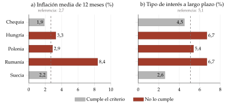
Fuente: elaboración propia con datos del Banco Central Europeo (2026u) (tabla 3.1). Inflación: media de junio de 2025 a mayo de 2026; referencia, la media de Chipre, Francia y Dinamarca más 1,5 puntos. Tipo a largo plazo: referencia, la media de esos 3 países más 2 puntos.
| Estado | Déficit 2025 | Deuda 2025 | PDE | MTC II | Convergencia legal |
|---|---|---|---|---|---|
| Chequia | 2,1 | 44,3 | no | no | no |
| Hungría | 4,7 | 74,6 | sí | no | no |
| Polonia | 7,3 | 59,7 | sí | no | no |
| Rumanía | 7,9 | 59,3 | sí | no | no |
| Suecia | 1,3 | 35,1 | no | no | no |
Fuente: Banco Central Europeo (2026u). Déficit y deuda de las administraciones públicas, en % del PIB. Los 3 procedimientos de déficit excesivo quedaron en suspenso en junio de 2026.
Valoración:
A favor: dieron credibilidad al proyecto y forzaron una convergencia notable: en España, la inflación bajó del 6 % en 1992 a menos del 2 % en 1998, y el diferencial del bono a 10 años con Alemania, de más de 4 puntos a principios de 1995 a unas décimas en 1998 [ver tema 4.A.27].
En contra: son nominales y miden un momento, no la capacidad de vivir sin tipo de cambio. Las áreas monetarias óptimas piden convergencia real, flexibilidad y ciclos sincronizados, y no había criterios sobre el crédito privado ni la balanza por cuenta corriente: España e Irlanda cumplían de sobra antes de 2008 [ver tema 3.B.16]. Se confió en que la convergencia real llegaría con la propia unión, la hipótesis de la endogeneidad de Frankel y Rose (1998).
Recapitulación de I: el SME enseñó que, con capitales libres, los tipos fijos pero ajustables son asimétricos y vulnerables; la unión monetaria fue la salida, con un banco central común e independiente y unos criterios de entrada nominales. Pasamos a ver ese banco central.
II. El Sistema Europeo de Bancos Centrales
Una vez visto por qué y cómo nació el euro, pasamos a quién lo gobierna: las instituciones, el objetivo y los instrumentos de su política monetaria.
Conclusión anticipada: el Eurosistema es uno de los bancos centrales más independientes del mundo, con un mandato jerárquico (la estabilidad de precios, concretada desde 2021 en un 2 % simétrico a medio plazo) y unos instrumentos que han pasado de un sistema de corredor con reservas escasas a un sistema de suelo con reservas abundantes.
II.1. El marco institucional
II.1.1. SEBC, Eurosistema y BCE
Base jurídica: los artículos 127 a 133 y 282 a 284 del TFUE y el Protocolo n.º 4, los Estatutos del SEBC y del BCE. La política monetaria de los Estados del euro es competencia exclusiva de la Unión (art. 3 TFUE).
3 círculos (figura 2):
el Sistema Europeo de Bancos Centrales (SEBC): el BCE y los bancos centrales de los 27 Estados;
el Eurosistema: el BCE y los 21 bancos centrales de la zona del euro; es el que hace la política monetaria;
el Banco Central Europeo (BCE): en Fráncfort, con personalidad jurídica y, desde Lisboa, institución de la Unión. Dirige el Eurosistema; los bancos centrales nacionales ejecutan la mayor parte de las operaciones.
Funciones básicas del Eurosistema (art. 127.2 TFUE): definir y ejecutar la política monetaria; realizar operaciones de divisas; poseer y gestionar las reservas oficiales, y promover el buen funcionamiento de los sistemas de pago (TARGET).10
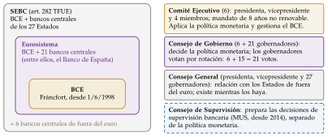
Fuente: elaboración propia a partir del Protocolo n.º 4 y del Banco Central Europeo (2026j).
II.1.2. La independencia
Por qué: un banco central independiente con un objetivo claro evita el sesgo inflacionista de la discrecionalidad y la tentación de financiar al Estado; la evidencia de los 80 y 90 asociaba más independencia con menos inflación sin menos crecimiento [ver tema 3.A.36].
Cómo se garantiza (art. 130 TFUE):
institucional: ni el BCE ni los bancos centrales nacionales pueden pedir ni aceptar instrucciones de las instituciones de la Unión ni de los gobiernos;
personal: mandatos largos (8 años, no renovables, en el Comité Ejecutivo; al menos 5 años para los gobernadores), con cese solo por incapacidad o falta grave, que revisa el Tribunal de Justicia;
funcional: un objetivo prioritario fijado en el Tratado y la prohibición de financiación monetaria (art. 123 TFUE): ni descubiertos ni compras directas de deuda pública en el mercado primario; tampoco acceso privilegiado del sector público a las entidades financieras (art. 124) ni rescates de un Estado por otro (cláusula de no corresponsabilidad, art. 125);
financiera: presupuesto y capital propios.
Su contrapeso, la rendición de cuentas: informe anual al Parlamento, al Consejo, a la Comisión y al Consejo Europeo; comparecencias trimestrales de la presidenta ante la comisión de asuntos económicos del Parlamento Europeo, y transparencia: conferencia de prensa tras cada reunión y actas (las «cuentas» de las reuniones) desde 2015.
II.1.3. Los órganos rectores
El BCE tiene 3 órganos rectores (art. 129 TFUE y arts. 9 a 12 y 44 a 46 de los Estatutos): 2 que gobiernan el euro, el Comité Ejecutivo y el Consejo de Gobierno, y uno de transición para los Estados de fuera, el Consejo General. Conviene verlos por separado, porque cada uno tiene una composición, un modo de decidir y unas funciones distintas:
1. El Comité Ejecutivo, el núcleo permanente del BCE:
composición: presidenta (Christine Lagarde, que dejará el cargo el 7 de febrero de 2027, antes del final de su mandato), vicepresidente (Boris Vujčić, desde el 1 de junio de 2026, tras Luis de Guindos) y 4 miembros (Philip Lane, Isabel Schnabel, que se va al FMI el 3 de enero de 2027, Piero Cipollone y Frank Elderson). A mediados de noviembre de 2026 no se ha nombrado a ningún sucesor;
nombramiento: por el Consejo Europeo, por mayoría cualificada, a recomendación del Consejo y tras consultar al Parlamento Europeo y al Consejo de Gobierno, para 8 años no renovables;
funciones: aplica la política monetaria que decide el Consejo de Gobierno, da las instrucciones a los bancos centrales nacionales, prepara las reuniones y gestiona el día a día del BCE.
2. El Consejo de Gobierno, el órgano que decide:
composición: los 6 del Comité Ejecutivo y los 21 gobernadores de los bancos centrales de la zona del euro, 27 personas;
funciones: decide la política monetaria (los tipos oficiales, las compras de activos, la liquidez) y adopta las orientaciones que ejecutan el Comité Ejecutivo y los bancos centrales nacionales; también aprueba los proyectos de decisión del Consejo de Supervisión [ver tema 3.B.44];
cómo decide: en reuniones de política monetaria cada 6 semanas, por mayoría simple, con el voto de calidad de la presidenta en caso de empate. Sus miembros votan a título personal, no como representantes de su país;
el sistema de rotación (figura 3). Para que un Consejo que crece con cada ampliación siga pudiendo decidir con agilidad, y para que los votos guarden cierta relación con el peso de cada economía, desde 2003 (con la habilitación del Tratado de Niza) se previó que no votaran todos los gobernadores a la vez; se aplica desde que hubo más de 18, al entrar Lituania el 1 de enero de 2015:
los 6 del Comité Ejecutivo votan siempre;
los gobernadores se ordenan por el tamaño de su economía y de su sector financiero y forman 2 grupos: el grupo 1, los 5 mayores (Alemania, España, Francia, Italia y Países Bajos), comparte 4 votos, y el grupo 2, los otros 16 desde que entró Bulgaria, comparte 11;
los votos rotan cada mes: en el grupo 1 deja de votar uno cada mes (cada gobernador vota 4 meses de cada 5, un 80 % del tiempo; el de España, por ejemplo, no votó en abril ni en septiembre de 2026) y en el grupo 2 dejan de votar 5 (cada gobernador vota un 69 % del tiempo);
en total, 6 + 4 + 11 = 21 votos; todos los gobernadores asisten y hablan, voten o no;
con 22 gobernadores se pasará a 3 grupos: los 5 mayores con 4 votos, 11 con 8 y 6 con 3.
3. El Consejo General, el puente con los Estados de fuera del euro:
composición: la presidenta, el vicepresidente y los 27 gobernadores (los otros miembros del Comité Ejecutivo asisten sin voto);
funciones: hereda las tareas del IME que siguen pendientes con los Estados que aún no tienen el euro: contribuye a los informes de convergencia, a la fijación de los tipos de cambio irrevocables de los que entran y al seguimiento del MTC II;
duración: es transitorio y existirá mientras haya Estados de la Unión sin el euro.
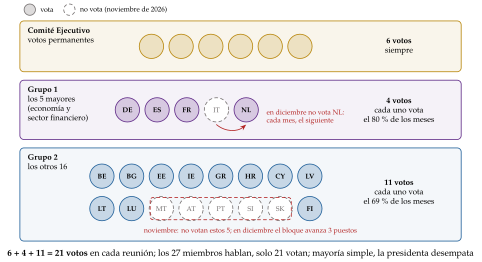
Fuente: elaboración propia a partir de la explicación y del calendario de votos de 2026 del BCE, con la idea de la figura del manual de Baldwin y Wyplosz (2020). Los gobernadores, en el orden del calendario del BCE (el nombre del país en su lengua); el ejemplo es noviembre de 2026.
El capital: lo suscriben los 27 bancos centrales según una clave de capital que pondera a partes iguales la población y el PIB de cada Estado y se revisa cada 5 años (la última vez, el 1 de enero de 2024); el capital suscrito es de unos 10.825 millones de euros y el Banco de España tiene el 9,67 % (el 11,69 % del Eurosistema). La clave reparte los beneficios y las pérdidas del BCE (perdió 1.266 millones de euros en 2023, 7.944 en 2024 y 1.254 en 2025, por pagar por las reservas más de lo que rinden sus bonos) y servía de guía para las compras de deuda pública.
II.2. El objetivo y la estrategia
El mandato (art. 127.1 TFUE): «el objetivo principal del SEBC será mantener la estabilidad de precios»; «sin perjuicio de este objetivo», apoyará las políticas económicas generales de la Unión (el crecimiento, el pleno empleo, la protección del medio ambiente del art. 3 TUE). Es un mandato jerárquico, frente al dual de la Reserva Federal.
La estrategia es la forma en que el BCE concreta y persigue ese mandato. Ha tenido 4 versiones:
1998: estabilidad de precios como un crecimiento interanual del IAPC de la zona del euro inferior al 2 % a medio plazo, y 2 «pilares»: un valor de referencia para el crecimiento de M3 (un 4,5 %) y un análisis amplio de los demás indicadores;
2003: el objetivo pasa a ser una inflación «inferior, pero próxima, al 2 %», como margen frente a la deflación; el análisis monetario pasa a ser un control cruzado del económico y el valor de referencia deja de revisarse;
2021 (8 de julio): un objetivo simétrico del 2 % a medio plazo: las desviaciones al alza y a la baja son igual de indeseables. Por el límite inferior de los tipos, ante una inflación baja persistente la respuesta tiene que ser «especialmente enérgica o persistente», aunque eso lleve a un periodo transitorio por encima del objetivo. Además: el análisis económico y el monetario y financiero; incluir la vivienda en propiedad en el IAPC a largo plazo, y un plan de acción sobre el cambio climático;
2025 (30 de junio): la evaluación confirma el objetivo simétrico del 2 % y extiende la respuesta «enérgica o persistente» a las desviaciones grandes y duraderas en los 2 sentidos; da más peso al análisis de escenarios y de riesgos en las decisiones y en la comunicación, y mantiene la flexibilidad en la elección de los instrumentos. La próxima evaluación será en 2030.
¿Por qué el 2 % y a medio plazo? El IAPC sobrestima algo la inflación verdadera (sesgos de calidad y de sustitución), un 2 % deja margen para bajar los tipos reales y para los ajustes de precios relativos entre países sin deflación en ninguno, y la política monetaria actúa con retrasos largos y variables, de modo que no puede corregir cada perturbación [ver tema 3.A.41]. Se mide en la zona del euro en conjunto: el BCE no tiene objetivos nacionales.
La estabilidad financiera: no es un objetivo del mandato, pero la crisis enseñó que la estabilidad de precios no la garantiza. Se persigue sobre todo con la política macroprudencial, que es nacional y del BCE como supervisor [ver tema 3.B.27]; en la política monetaria entra en el análisis de los riesgos y en la «evaluación de la proporcionalidad» de sus medidas.
II.3. Los instrumentos
II.3.1. El marco operativo: del corredor al suelo
La variable operativa: el tipo de interés a un día del mercado monetario, hoy el €STR (euro short-term rate), el tipo medio al que los bancos toman depósitos a un día sin garantía; lo publica el BCE desde octubre de 2019 y sustituyó al eonia, que se dejó de publicar el 3 de enero de 2022.
Los instrumentos convencionales, los mismos desde 1999 [ver tema 3.A.36]:
operaciones de mercado abierto, préstamos con garantía a iniciativa del BCE: las operaciones principales de financiación (OPF), semanales y a una semana, cuyo tipo es el «tipo oficial»; las de financiación a más largo plazo, a 3 meses, y las de ajuste y estructurales. Desde el 15 de octubre de 2008 se adjudican a tipo fijo y sin límite: cada banco recibe toda la liquidez que pide si aporta garantías;11
facilidades permanentes a un día, a iniciativa de los bancos: la facilidad marginal de crédito (techo del tipo a un día) y la facilidad de depósito (suelo);
reservas mínimas: el 1 % de los depósitos y valores a menos de 2 años desde enero de 2012 (antes, el 2 %), sin remuneración desde el 20 de septiembre de 2023.
Las contrapartidas y las garantías: pueden acudir las entidades de crédito sujetas a reservas mínimas; toda la financiación es con garantía, con un marco único de activos admisibles (deuda pública y privada, préstamos) y descuentos (haircuts) según su riesgo. La lista se amplió en la crisis (de A\(-\) a BBB\(-\) en 2008, deuda griega con excepciones) y en 2020.
Del corredor al suelo (gráfico 4):
hasta 2008, con reservas escasas, el BCE daba cada semana la liquidez justa y el tipo a un día quedaba cerca del de las OPF, en el centro de un corredor de \(\pm100\) puntos básicos;
las operaciones a largo plazo y las compras de activos llenaron el sistema de reservas: el tipo a un día bajó al suelo y el tipo que importa pasó a ser el de la facilidad de depósito;
el marco operativo de 2024 (13 de marzo) lo hace oficial: la orientación se fija con el tipo de la facilidad de depósito; la liquidez se da a demanda en operaciones a tipo fijo y sin límite (un sistema de suelo con oferta impulsada por la demanda, demand-driven floor); el diferencial entre las OPF y la facilidad de depósito bajó de 50 a 15 puntos básicos el 18 de septiembre de 2024, y más adelante habrá operaciones estructurales a largo plazo y una cartera estructural de valores. Hoy el €STR queda unos 7 puntos básicos por debajo de la facilidad de depósito, y el exceso de liquidez ha bajado de 4,7 billones (noviembre de 2022) a unos 2,1. La revisión de los parámetros prevista para 2026 no se ha anunciado aún.
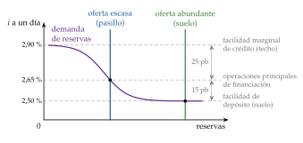
Fuente: elaboración propia a partir de Banco Central Europeo (2024a), con los tipos vigentes desde el 16 de septiembre de 2026.
II.3.2. Los instrumentos no convencionales
Se usan cuando el tipo llega a su límite inferior o cuando la transmisión se rompe [ver tema 3.A.37]. En el BCE han sido 5 familias (la cronología completa, en el anexo A):
liquidez a largo plazo: las operaciones a 3 años de 2011-2012 y las operaciones de financiación a plazo más largo con objetivo específico (TLTRO, targeted longer-term refinancing operations), condicionadas a prestar a empresas y hogares (3 series, 2014-2024);
tipos negativos: la facilidad de depósito, bajo cero de junio de 2014 a julio de 2022, con un mínimo del \(-0{,}50\) %;
compras de activos (expansión cuantitativa, quantitative easing): el programa de compras de activos (APP, desde 2014; deuda pública desde marzo de 2015) y el de emergencia frente a la pandemia (PEPP, 2020-2022);
orientación sobre los tipos futuros (forward guidance), desde julio de 2013;
instrumentos contra la fragmentación: el programa para los mercados de valores (SMP, 2010), las operaciones monetarias de compraventa (OMT, outright monetary transactions, 2012) y el instrumento para la protección de la transmisión (TPI, transmission protection instrument, 2022).
OMT y TPI, frente a frente:
las OMT compran sin límite deuda a 1-3 años de un Estado que haya pedido un programa del MEDE y cumpla su condicionalidad; nunca se han usado [ver tema 3.B.45];
el TPI compra deuda de un país cuyos diferenciales suban de forma «injustificada y desordenada», sin programa, pero solo si cumple el marco fiscal de la Unión, no tiene desequilibrios graves, su deuda es sostenible y sus políticas son sólidas; tampoco se ha usado.
El balance como huella: el activo del Eurosistema pasó de unos 1,2 billones de euros en 2007 a 8,8 en junio de 2022 y es de 5,9 en noviembre de 2026 (gráfico 5).
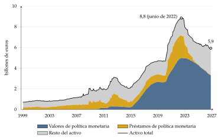
Fuente: elaboración propia con datos del BCE (estado financiero semanal consolidado). Último estado de cada mes; último dato, semana del 6 de noviembre de 2026. Qué hay que ver: el balance creció primero con los préstamos a los bancos (2008-2012 y TLTRO III, 2020-2022) y después con las compras de valores.
II.3.3. El euro digital
Una moneda digital de banco central (CBDC, central bank digital currency) minorista es efectivo en forma digital: un pasivo del banco central al alcance de todos.
El euro digital: la Comisión propuso su reglamento en junio de 2023, dentro del «paquete de la moneda única»; sería de curso legal, sin intereses, con un límite de tenencia por persona y utilizable sin conexión. El Consejo fijó su posición en diciembre de 2025 y el Parlamento aprobó su mandato negociador en julio de 2026; en noviembre siguen las negociaciones (trílogos), sin acuerdo. Si se aprueba, el BCE prevé un piloto en 2027 y la primera emisión en 2029.
Por qué: mantener el ancla del dinero público cuando el efectivo se usa menos y reducir la dependencia de medios de pago de fuera de Europa. Riesgos: la desintermediación de los bancos y una huida más rápida hacia el dinero del banco central en una crisis; de ahí el límite y la falta de remuneración [ver tema 3.A.36]. El euro digital tiene también una dimensión exterior, que se ve en el apartado siguiente.
II.4. El papel internacional del euro
El euro no es solo la moneda de 21 Estados: se usa fuera de la zona como moneda de reserva, de financiación, de pago y de facturación. Ese uso exterior importa a la política monetaria, porque cambia cómo se transmiten sus decisiones y qué redes de seguridad tiene que ofrecer el BCE, y desde 2025 se ha convertido en un objetivo político de la Unión. Lo vemos en 5 pasos: qué es una moneda internacional, cuánto pesa hoy el euro, de qué depende, cómo lo apoya el Eurosistema y qué ambición tiene la Unión.
II.4.1. Qué es una moneda internacional
Una moneda es internacional cuando cumple fuera de su zona las 3 funciones del dinero. La clasificación clásica, de Peter Kenen (1983) y Paul Krugman (1984), cruza cada función con quién la usa:
depósito de valor: en el uso público, las reservas de los bancos centrales; en el privado, la deuda, los préstamos y los depósitos internacionales;
medio de cambio: en el uso público, las intervenciones en los mercados de divisas; en el privado, los pagos internacionales y las operaciones de cambio (la moneda «vehículo»);
unidad de cuenta: en el uso público, el ancla de otras monedas (varias monedas de Europa y de África, como los francos CFA, se fijan al euro o lo toman como referencia) y, en el privado, la facturación del comercio.
La postura del BCE: desde 1999 decía que no fomentaba ni frenaba el uso internacional del euro, que debía resultar del mercado. Esa neutralidad cambió en 2025 (II.4.5).
II.4.2. Cuánto pesa: la segunda moneda, lejos del dólar
El BCE publica cada junio un informe sobre el papel internacional del euro; el de junio de 2026 (datos de 2025) dice que el euro sigue siendo la segunda moneda del mundo, con en torno a un 20 % de los usos internacionales, unos 5 puntos más que el peso de la zona del euro en el PIB mundial; su índice compuesto apenas subió en 2025 (0,2 puntos a tipos de cambio constantes). Por funciones (cuadro 2):
reservas: el 20,2 % de las reservas de divisas a finales de 2025 (0,5 puntos menos que un año antes) y el 20,6 % en el segundo trimestre de 2026, frente al 56,7 % del dólar. El gran ganador de 2025 no fue el euro sino el oro, que con la subida de su precio llegó al 27 % de las reservas oficiales, por delante del euro (15 %) y de los títulos del Tesoro estadounidense (22 %);
deuda y financiación: el 24,6 % de la deuda internacional, el 21,7 % de los préstamos y el 17,3 % de los depósitos internacionales. En 2025 se emitieron en euros bonos y préstamos internacionales por más de 1,1 billones de dólares, un récord, y el euro llegó al 31,1 % de las emisiones de bonos en moneda extranjera (5,5 puntos más). Es la primera moneda de los bonos verdes internacionales (un 41 %);
pagos y cambio: en torno al 23 % de los mensajes de pago de SWIFT (el dólar, un 48 %, y el renminbi, un 4 %); el 32,2 % de las operaciones de cambio liquidadas en CLS (4,1 puntos menos) y el 28,5 % de las operaciones de cambio en la encuesta trienal del BPI de abril de 2025;
facturación: casi el 60 % de las exportaciones de bienes de la zona del euro fuera de ella se factura en euros (el 64 % de las de servicios) y el 53,1 % de las importaciones. Es su función más «europea»: en el comercio de terceros países el euro pesa poco, y el renminbi gana terreno en el comercio con China.
| Función | Indicador | Cuota del euro (%) |
|---|---|---|
| Reservas | Reservas de divisas (4.º trim.) | 20,2 |
| Deuda y financiación | Deuda internacional | 24,6 |
| Préstamos internacionales | 21,7 | |
| Depósitos internacionales | 17,3 | |
| Emisiones de bonos en moneda extranjera | 31,1 | |
| Pagos y cambio | Mensajes de pago de SWIFT | 23 |
| Operaciones de cambio liquidadas en CLS (4.º trim.) | 32,2 | |
| Facturación | Exportaciones de bienes fuera de la zona | 60,0 |
| Importaciones de fuera de la zona | 53,1 |
Fuente: Banco Central Europeo (2026t), a tipos de cambio constantes.
II.4.3. De qué depende, y qué gana y qué arriesga la zona del euro
El uso internacional de una moneda tiene mucha inercia (el dólar tardó décadas en desplazar a la libra) y depende de 4 condiciones:
el tamaño de la economía y de su comercio;
la estabilidad del valor de la moneda, es decir, la credibilidad del banco central;
la profundidad y la liquidez de sus mercados financieros, y sobre todo un activo seguro abundante. Es el punto débil del euro: no hay un activo seguro común tan grande como los bonos del Tesoro estadounidense, y los mercados de capitales siguen fragmentados por países [ver tema 3.B.44] [ver tema 3.B.45];
la geopolítica y el estado de derecho: la confianza de los inversores en las instituciones y la capacidad de defensa y de alianzas de quien emite la moneda.
Un mayor uso internacional tiene ventajas e inconvenientes para la zona del euro:
ventajas: señoreaje internacional, financiación más barata para los Estados y las empresas (los no residentes demandan sus activos), menos riesgo de cambio para quien factura en euros y más autonomía frente a sanciones y presiones de terceros;
inconvenientes: la demanda exterior de euros tiende a apreciarlo en las crisis, cuando menos conviene, y la política del BCE se transmite con más fuerza fuera, lo que puede obligarle a hacer de prestamista de última instancia en euros para el resto del mundo.
II.4.4. Cómo lo apoya el Eurosistema: líneas de liquidez y pagos
Si se quiere que otros usen el euro, hay que ofrecerles euros cuando escaseen en una crisis. El BCE tiene 2 instrumentos:
las líneas de permuta (swap): el BCE presta euros a otro banco central a cambio de su moneda. Hay líneas permanentes y recíprocas con la Reserva Federal, el Banco de Inglaterra, el Banco de Japón, el Banco de Canadá y el Banco Nacional Suizo, y otras bilaterales (por ejemplo, con el Banco Nacional de Dinamarca y con el Banco Popular de China);
la facilidad de repo del Eurosistema para bancos centrales (EUREP): préstamos de euros a bancos centrales de fuera de la zona contra garantías en euros de alta calidad. Nació en 2020, en la pandemia, como red temporal y sobre todo regional; el 14 de febrero de 2026 el BCE la convirtió en una red permanente y global: acceso, en principio, para todos los bancos centrales, salvo los excluidos por blanqueo de capitales, financiación del terrorismo o sanciones, desde el tercer trimestre de 2026. La razón que da es que los cambios geopolíticos pueden hacer más volátiles los mercados y que quiere que la red sea útil para los tenedores de valores en euros de todo el mundo. Las líneas swap no cambian.
Los pagos: el euro digital se ha diseñado pensando en un posible uso internacional, pero evitando que sustituya a la moneda de otros países; además, la estrategia de pagos del Eurosistema de marzo de 2026 conecta TARGET con plataformas de registro distribuido (Pontes, con liquidación en dinero de banco central desde el tercer trimestre de 2026) y enlaza su sistema de pagos inmediatos (TIPS) con los de otros países (II.3.3).
II.4.5. La ambición de 2025-2026: un «momento del euro global»
El contexto: los aranceles «recíprocos» de Estados Unidos del 2 de abril de 2025 vinieron con una depreciación del dólar y una subida de los tipos de sus bonos, algo poco habitual en una crisis, y abrieron un debate sobre su papel de refugio. En una encuesta del BCE de abril de 2026, el 70 % de los bancos centrales señalaba la geopolítica como su mayor riesgo, aunque la mayoría no había cambiado la composición de sus reservas.
El giro del BCE: en mayo de 2025, en Berlín, Christine Lagarde habló de un «momento del euro global»: el euro no ganará peso por defecto, tendrá que ganárselo con un mercado de capitales integrado, un activo seguro común, solidez institucional y capacidad de defensa.
La respuesta de la Unión: la Comisión presentó al Eurogrupo una nota para reforzar el papel internacional del euro (13 de febrero de 2026), y la Cumbre del Euro del 19 de marzo de 2026 afirmó que «la posición del euro en la escena mundial dependerá de la fortaleza económica y geopolítica de Europa». La agenda que comparten el BCE y la Comisión tiene 3 piezas:
completar el mercado único y la unión de ahorros e inversiones (la antigua unión de mercados de capitales) [ver tema 3.B.44];
financiar en común bienes públicos europeos (defensa, energía) y crear así un volumen suficiente de deuda europea segura y líquida [ver tema 3.B.45];
el euro digital y la modernización de los pagos, para no depender de redes de fuera de Europa.
Valoración: el euro ha resistido bien (lleva una década en torno al 20 % de las reservas), pero no ha ganado la que el debate de 2025 hacía esperar; mientras no haya un activo seguro común, su papel internacional seguirá por debajo del peso económico de la zona. Su uso como instrumento de la «autonomía estratégica» de la Unión en sus relaciones exteriores se estudia aparte [ver tema 3.B.42].
Recapitulación de II: el Eurosistema es independiente y tiene un objetivo claro; decide un Consejo de Gobierno de 27 personas con votos que rotan, actúa con un marco operativo que ha pasado del corredor al suelo, con un menú de instrumentos no convencionales nacido de las crisis, y sostiene una moneda que es la segunda del mundo y que la Unión quiere más global. Veamos cómo ha usado esos instrumentos.
III. La política monetaria en la zona del euro desde 2009
Conocidas las instituciones y los instrumentos, pasamos a su uso. El gráfico 6 resume la historia: los tipos del BCE desde 1999.
Conclusión anticipada: desde 2009 el BCE ha pasado de banco central de manual a prestamista de última instancia de hecho de los Estados del euro. Ha tenido que inventar sus instrumentos crisis a crisis, en el límite de su mandato y con los tribunales mirando, y su gran lección es que, en una unión monetaria incompleta, la credibilidad de que el euro es irreversible es el primer instrumento de la política monetaria.
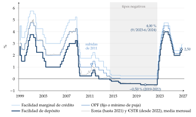
Fuente: elaboración propia con datos del BCE. Escalón: fecha de efecto. Entre 2000 y 2008, tipo mínimo de puja de las OPF. Tipo a un día: eonia hasta 2021 y €STR desde 2022, media mensual. Qué hay que ver: hasta 2008 el tipo a un día seguía a las OPF (corredor); desde 2009, a la facilidad de depósito (suelo).
III.1. La crisis de la deuda soberana (2009-2014)
III.1.1. Los hechos
El punto de partida: tras la quiebra de Lehman, el BCE bajó la OPF del 4,25 % al 1 % (mayo de 2009), dio liquidez sin límite a tipo fijo y compró bonos garantizados [ver tema 3.B.26].
Los desequilibrios de los primeros años del euro: tipos reales bajos o negativos en la periferia, auges de crédito y de vivienda en España e Irlanda, déficits por cuenta corriente y pérdida de competitividad; en Grecia, además, déficits públicos ocultos. Entre 2005 y 2007 el diferencial español a 10 años con Alemania fue prácticamente nulo.12
La crisis:
en octubre de 2009 Grecia reconoció que su déficit pasaba del 12 % del PIB, y no del 6 % anunciado; en mayo de 2010 recibió el primer rescate y el BCE lanzó el SMP para comprar deuda en el mercado secundario;
en Deauville (18 de octubre de 2010), Francia y Alemania anunciaron que los acreedores privados soportarían pérdidas en los futuros rescates: el riesgo de impago de un Estado del euro dejó de ser teórico y los diferenciales se dispararon (gráfico 7); siguieron Irlanda (noviembre de 2010) y Portugal (mayo de 2011);
en abril y julio de 2011, el BCE de Jean-Claude Trichet subió la OPF del 1 % al 1,50 % ante una inflación del 2,5-3 % empujada por la energía, en plena crisis de deuda; Mario Draghi las deshizo en noviembre y diciembre, y en diciembre de 2011 y febrero de 2012 dio a los bancos más de un billón de euros a 3 años;
en verano de 2012 la crisis llegó a España e Italia, con diferenciales medios de 555 puntos básicos (España, julio de 2012) y 519 (Italia, noviembre de 2011), y los mercados empezaron a poner precio a la ruptura del euro (el riesgo de redenominación).
El giro: el 26 de julio de 2012, Draghi prometió hacer «lo que sea necesario» y en septiembre se aprobaron las OMT. Los diferenciales cayeron a la mitad en un año sin que el BCE comprara nada. ¿Cómo puede una promesa bajar los tipos?
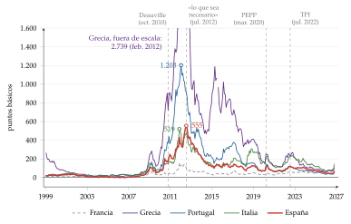
Fuente: elaboración propia con datos del BCE (tipos a largo plazo a efectos de convergencia). Medias mensuales, en puntos básicos; Grecia se sale de la escala en 2011-2012 (máximo de 2.739 en febrero de 2012). Qué hay que ver: los diferenciales casi nulos de 1999-2007, su explosión tras Deauville y su caída tras el discurso de Draghi, sin compras.
III.1.2. Las crisis de deuda que se cumplen solas y el prestamista de última instancia
a) Idea
Un Estado del euro se endeuda en una moneda que no emite. Si los inversores temen un impago, exigen más interés; con más interés la deuda es más difícil de pagar y el impago se vuelve más probable: la crisis puede cumplirse sola, como un pánico bancario.13
La fragilidad de una unión sin prestamista de los Estados se describe en la teoría de la integración monetaria [ver tema 3.B.16]; aquí se formaliza para ver qué hace con ella el banco central.
b) Modelo
i) Supuestos
Un Estado debe refinanciar hoy una deuda \(B\) y devolver mañana \((1+i)B\).
Su capacidad de pago es incierta: mañana podrá reunir un superávit primario \(S\), distribuido de forma uniforme entre 0 y \(\bar S\). Si \(S<(1+i)B\), impaga del todo (sin recuperación).
Inversores neutrales al riesgo, que pueden comprar un activo sin riesgo al tipo \(r\) (el bono alemán) y forman expectativas racionales.
Sin banco central propio: el Estado no puede pagar emitiendo dinero.
ii) Desarrollo
Paso 1: la probabilidad de impago dado el tipo:
\(p=\Pr\left[S<(1+i)B\right]=\dfrac{(1+i)B}{\bar S}\): cuanto más cara la deuda, más probable el impago.
Paso 2: el tipo que piden los inversores dada la probabilidad que esperan:
tienen que ganar lo mismo que con el activo seguro, \((1-p^e)(1+i)=1+r\), así que \(1+i=\dfrac{1+r}{1-p^e}\): cuanto más temen el impago, más interés exigen.
Paso 3: juntando los 2, la probabilidad que resulta depende de la que se espera:
\(p=\dfrac{\kappa}{1-p^e}\), con \(\kappa\equiv\dfrac{(1+r)B}{\bar S}\), los fundamentos: la carga de la deuda frente a la capacidad de pagarla.
Paso 4: el equilibrio. Con expectativas racionales, \(p=p^e\):
\[p\,(1-p)=\kappa\tag{2}\]
si \(\kappa<\tfrac14\), hay 2 equilibrios (gráfico 8): uno bueno, \(p_L\), con poco riesgo y tipos bajos, y uno malo, \(p_H\), con mucho riesgo y tipos altos;
el bueno es estable y el malo no: si el mercado espera algo más que \(p_H\), el tipo sube, el impago se hace aún más probable y la espiral acaba en la pérdida del acceso al mercado, sin tipo que compense el riesgo;
si \(\kappa>\tfrac14\), no hay equilibrio con financiación: el Estado es insolvente al tipo que sea (derivación en el anexo B).
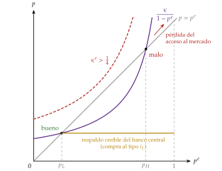
iii) Implicaciones
Los mismos fundamentos, 2 destinos: con \(\kappa<\tfrac14\), un país solvente puede caer en la crisis solo porque el mercado la espera; las primas no reflejan solo los fundamentos, y un cambio del ánimo (Deauville, el temor a la ruptura) basta para saltar de un equilibrio al otro.
El remedio es un respaldo creíble: si el banco central promete comprar sin límite al tipo del equilibrio bueno, \(i_L\), el tipo no puede subir más, la probabilidad no pasa de \(p_L\) y el equilibrio malo desaparece. Si la promesa es creíble, no hace falta comprar: es lo que pasó con las OMT, cuya fama bastó.
Pero solo para los solventes: con \(\kappa>\tfrac14\) el respaldo sería financiar a un insolvente, lo que prohíben los artículos 123 y 125 del TFUE y crea riesgo moral. Por eso las OMT exigen un programa del MEDE y el TPI, unas políticas sostenibles: la condicionalidad sirve para separar la iliquidez de la insolvencia [ver tema 3.B.45].
Con moneda propia el problema no existe: el Reino Unido o Japón no pueden verse obligados a impagar en su moneda; su riesgo es la inflación, no el impago.
c) Extensiones
El círculo vicioso entre bancos y Estado: los bancos de cada país tienen la deuda de su Estado, y la caída de su precio debilita a los bancos, cuyo rescate sube la deuda. Lo que la unión bancaria intenta romper [ver tema 3.B.26] [ver tema 3.B.44].
El Tribunal de Justicia avaló el MEDE en Pringle (2012), y con él la condicionalidad que exigen las OMT [ver tema 3.B.45].
La redenominación: si el mercado teme que un país salga del euro, pide además una prima por el riesgo de cobrar en una moneda nueva y depreciada; la promesa de Draghi era sobre todo contra ese riesgo.
Deuda que vence poco a poco: si la deuda tiene vencimientos largos, la crisis llega despacio y da tiempo a actuar, pero los equilibrios múltiples se mantienen.
d) Evidencia empírica
De Grauwe y Ji (2013) muestran que entre 2010 y 2012 los diferenciales de la periferia subieron mucho más de lo que explicaban sus fundamentos (deuda, déficit, cuenta corriente) y que, tras el anuncio de las OMT, bajaron sin que los fundamentos mejoraran: la mayor parte de la subida fue pánico.
Altavilla, Giannone y Lenza (2016) estiman que los anuncios de las OMT bajaron unos 2 puntos los tipos a 2 años de Italia y España, sin efecto en los de Alemania y Francia.
Grecia es el contraejemplo: era insolvente (\(\kappa>\tfrac14\)), quedó fuera de las OMT y reestructuró su deuda con los acreedores privados en 2012.
e) Valoración
El modelo explica la crisis del euro mejor que una historia solo de fundamentos, y explica el éxito sin gasto de las OMT.
Pero distinguir la iliquidez de la insolvencia es difícil en tiempo real, y quien lo hace es un banco central no elegido. Por eso las OMT y las compras de deuda llegaron a los tribunales.
Las OMT y las compras de deuda ante los tribunales.
Gauweiler (C-62/14, 16 de junio de 2015): a petición del Tribunal Constitucional alemán, el Tribunal de Justicia de la Unión avaló las OMT: son política monetaria (sirven para reparar la transmisión), proporcionales y no son financiación monetaria, porque las compras son en el mercado secundario, con un plazo entre la emisión y la compra y sin anunciarse.
Weiss (C-493/17, 11 de diciembre de 2018): avaló también el programa de compras de deuda pública (PSPP) del APP.
El Tribunal Constitucional alemán (5 de mayo de 2020): declaró ultra vires esa sentencia y el PSPP, por no haber ponderado el BCE la proporcionalidad de sus efectos económicos, y dio 3 meses para hacerlo, so pena de que el Bundesbank dejara de participar. El BCE facilitó sus análisis al Bundestag y al Gobierno alemán, que los dieron por buenos; la Comisión abrió un procedimiento de infracción contra Alemania (junio de 2021) que archivó en diciembre, cuando Alemania reconoció la primacía del Derecho de la Unión. El choque dejó planteada la primacía del Derecho de la Unión [ver tema 3.B.36].
III.2. Deflación y expansión cuantitativa (2014-2019)
El problema: superada la crisis de deuda, la inflación bajó del 2,5 % de 2012 a cifras negativas a finales de 2014 y en 2015, con el crédito estancado y el tipo oficial casi en cero: el riesgo era la deflación [ver tema 3.A.41].
La respuesta, en 4 piezas:
tipos negativos: la facilidad de depósito bajó al \(-0{,}10\) % en junio de 2014, y hasta el \(-0{,}50\) % en septiembre de 2019, con un sistema de 2 tramos para aliviar a los bancos;
TLTRO: crédito barato a 4 años, más barato cuanto más prestara el banco;
expansión cuantitativa: el 22 de enero de 2015, compras de 60.000 millones de euros al mes, sobre todo de deuda pública (80.000 entre abril de 2016 y marzo de 2017); las compras netas pararon a finales de 2018 y se reanudaron en noviembre de 2019;
orientación: tipos bajos «durante un periodo prolongado» y, después, hasta bastante después del fin de las compras.14
Resultado: la inflación volvió a subir, pero nunca llegó de forma duradera al 2 %; el balance creció y los bancos sufrieron en sus márgenes. Su eficacia se discute en otros temas [ver tema 3.A.37] [ver tema 3.A.40].
III.3. Pandemia, inflación y normalización (2020-2026)
La pandemia (2020-2021): el 18 de marzo de 2020, el PEPP, de 750.000 millones de euros, ampliado hasta 1,85 billones, con flexibilidad entre países y en el tiempo; TLTRO III a tipos de hasta el \(-1\) %; garantías más flexibles. Compró de hecho buena parte de la deuda emitida para la respuesta fiscal, y las primas no se dispararon [ver tema 3.A.40].
La inflación (2021-2023): la reapertura, los cuellos de botella y la energía tras la invasión de Ucrania llevaron la inflación al 10,6 % en octubre de 2022 (gráfico 9). El BCE tardó en reaccionar (la creyó transitoria): terminó las compras netas en julio de 2022 y subió la facilidad de depósito 450 puntos básicos, de \(-0{,}50\) % a 4 %, entre julio de 2022 y septiembre de 2023, la subida más rápida de su historia. Para que la subida no rompiera la transmisión en los países más endeudados, creó el TPI (21 de julio de 2022).
La normalización (2023-2025): dejó de reinvertir el APP en julio de 2023 y el PEPP a finales de 2024, de modo que el balance se reduce poco a poco, y empezó a bajar los tipos el 12 de junio de 2024, hasta un 2 % en junio de 2025, con la inflación en torno al objetivo.
2026: otra vez la energía: la guerra de Oriente Próximo, desde finales de febrero, encareció de nuevo la energía y la inflación subió al 4,0 % en octubre (el 2,5 % sin energía ni alimentos). Con la lección de 2022, el BCE subió la facilidad de depósito al 2,25 % en junio y al 2,50 % en septiembre, y la mantuvo el 29 de octubre (la próxima reunión es el 16-17 de diciembre), para que no se desanclen unas expectativas a largo plazo que siguen en el 2 %.
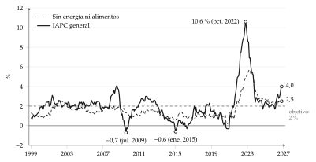
Fuente: elaboración propia con datos de Eurostat. IAPC, tasa interanual; subyacente: sin energía ni alimentos. Octubre de 2026, avance. Qué hay que ver: la deflación de 2015, el máximo del 10,6 % en octubre de 2022 y que en 2026 la subida es de la energía, no de la subyacente.
III.4. Una política para 21 economías: la «talla única»
a) Idea
El BCE mira la inflación y la actividad de la zona del euro en conjunto, pero cada país tiene las suyas. Una política que es buena para la media puede ser demasiado laxa para uno y demasiado dura para otro: es la talla única (one size fits all).
Se ve con la regla de Taylor (1993), una descripción sencilla de lo que hace un banco central [ver tema 3.A.36]: basta con calcularla para cada país y compararla con el tipo común.
b) Modelo
i) Supuestos
El tipo que le convendría a cada país, si tuviera su propia política, sigue una regla de Taylor: \(i_j^*=r^*+\pi^*+\phi_\pi(\pi_j-\pi^*)+\phi_x x_j\), con \(\phi_\pi>1\) y \(\phi_x>0\) (\(r^*=\pi^*=2\) %, \(\phi_\pi=1{,}5\) y \(\phi_x=0{,}5\) en la original).
El BCE aplica la misma regla a la media ponderada de la zona: \(i=r^*+\pi^*+\phi_\pi(\bar\pi-\pi^*)+\phi_x\bar x\).
El tipo real neutral \(r^*\) es el mismo en todos los países (libre movimiento de capitales).
ii) Desarrollo
Paso 1: la holgura del tipo común para cada país. Restando las 2 reglas:
\[i-i_j^*=\phi_\pi\,(\bar\pi-\pi_j)+\phi_x\,(\bar x-x_j)\tag{3}\]
Un país con más inflación o más actividad que la media recibe un tipo menor que el que necesitaría: para él, la política es expansiva.
Paso 2: el tipo real. Como el tipo nominal es común, el real de cada país es \(i-\pi_j\): más bajo justo donde la inflación es más alta. La política monetaria común tiende a amplificar las diferencias (la crítica de Alan Walters al SME).
Paso 3: la fuerza que corrige. Más inflación en un país aprecia su tipo de cambio real, le resta competitividad y acaba frenándolo: es el canal de la competitividad, lento porque los precios y los salarios se ajustan despacio.
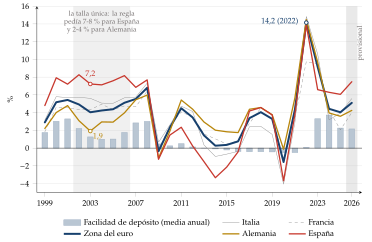
Fuente: elaboración propia con datos de Eurostat (IAPC), la Comisión Europea (AMECO, brecha de producción, previsión de primavera de 2026) y el BCE. Regla de J. B. Taylor (1993): \(i=1+1{,}5\,\pi+0{,}5\,\mathrm{OG}\). Medias anuales; 2026, provisional.
iii) Implicaciones
Entre 2002 y 2006 la regla pedía para España tipos del 7-8 % y para Alemania, del 2-4 %, con una facilidad de depósito entre el 1 y el 2 % (en 2003, un 7,2 % para España y un 1,9 % para Alemania) (gráfico 10): tipos reales negativos alimentaron el crédito y la vivienda en la periferia, y Alemania se ajustó con moderación salarial. La talla única contribuyó a los desequilibrios que estallaron en 2010.
La heterogeneidad no se puede corregir con la política monetaria: a los países les quedan la política fiscal y la macroprudencial (colchones anticíclicos, límites a los préstamos hipotecarios) como instrumentos nacionales [ver tema 3.B.27] [ver tema 3.B.45].
c) Extensiones
La fragmentación: el tipo oficial es común, pero el que pagan empresas y hogares no, si las primas soberanas y bancarias divergen. En 2011-2012 una pyme española pagaba por un préstamo bastante más que una alemana con el mismo riesgo; el TPI y las OMT son instrumentos contra esa fragmentación, no contra la heterogeneidad cíclica.
La sincronización endógena: si la unión acerca los ciclos de los países, el coste de la talla única baja con el tiempo, como pensaban Frankel y Rose (1998) [ver tema 3.B.16].
d) Evidencia empírica
La dispersión de las reglas nacionales fue máxima en 2002-2006, se invirtió en 2012-2015 (la regla pedía para España tipos negativos, un \(-3{,}3\) % en 2014, y para Alemania un 2 %) y volvió en 2022, cuando la inflación de los bálticos superó el 15 % y la de Francia no llegó al 6 % (gráfico 10). En 2026 la regla pide un 7,5 % para España y un 4,3 % para Alemania.
e) Valoración
La regla de Taylor es una referencia, no un mandato: el tipo neutral y la brecha se miden mal y en 2022 la inflación era sobre todo energía.
Pero la conclusión resiste: en una unión monetaria, el banco central solo puede hacer la política de la media. Lo demás les toca a los gobiernos y a la integración (la unión bancaria y la de mercados de capitales comparten los riesgos por la vía privada).
Recapitulación de III: el BCE ha pasado por 4 crisis en 15 años; aprendió a ser el respaldo de la unión (OMT, TPI), a usar su balance y a subir los tipos sin romper la transmisión. Lo que no puede es hacer una política distinta para cada país.
Conclusión
Recapitulación:
En conclusión, el euro nació de los fracasos de la cooperación cambiaria: la serpiente y el SME mostraron que, con capitales libres, los tipos fijos pero ajustables eran asimétricos y frágiles, y que la salida era compartir moneda y banco central.
Maastricht exigió para entrar una convergencia nominal y dio al BCE independencia y un objetivo de estabilidad de precios, hoy un 2 % simétrico.
Desde 2009, el BCE ha tenido que hacer de respaldo de los Estados, de comprador de activos y, en 2022 y 2026, de banco central clásico contra la inflación.
Relevancia:
Para España, el euro dio estabilidad y tipos bajos, pero también la lección de 2010-2012: sin tipo de cambio, la competitividad y la prudencia fiscal y financiera son nacionales [ver tema 4.A.28].
Extensiones:
La teoría de la integración monetaria [ver tema 3.B.16]; las crisis cambiarias [ver tema 3.B.17]; el diseño y la transmisión de la política monetaria [ver tema 3.A.36] [ver tema 3.A.37]; las políticas desde 2008 [ver tema 3.A.40]; la unión bancaria y la de mercados de capitales [ver tema 3.B.44]; la gobernanza económica [ver tema 3.B.45], y el Banco de España en el sistema financiero [ver tema 4.A.19].
Opinión:
El euro es hoy más sólido que en 2012, pero sigue incompleto: sin activo seguro común ni seguro de depósitos europeo, el TPI hace de red de una política fiscal que sigue siendo nacional. Completar la unión bancaria y la de capitales, y lanzar el euro digital, reforzaría la transmisión y el papel internacional del euro.
Idea final:
Volvamos al refrán: «cría fama y échate a dormir». El BCE ganó su fama en 2012 y le bastó para que nadie apostara contra el euro. Pero 2021 enseñó que un banco central no puede dormirse en esa fama: la credibilidad se cría cada día, cumpliendo con el 2 %.
A. Anexo: las decisiones del BCE, 2008-2026
| Fecha | Decisión (tipos: facilidad de depósito / OPF) |
|---|---|
| Julio de 2008 | Última subida de Trichet antes de la crisis: 3,25 / 4,25 % |
| Octubre de 2008 | Recorte coordinado con otros bancos centrales; OPF a tipo fijo y adjudicación plena (15 de octubre) |
| Oct. 2008-mayo 2009 | Recortes hasta 0,25 / 1,00 %; primer programa de bonos garantizados (2009) |
| Mayo de 2010 | Programa para los mercados de valores (SMP) |
| Abril y julio de 2011 | 2 subidas de Trichet: 0,75 / 1,50 % |
| Nov. y dic. de 2011 | Draghi deshace las subidas: 0,25 / 1,00 %; operaciones a 3 años (diciembre de 2011 y febrero de 2012); reservas mínimas del 1 % |
| Julio de 2012 | Facilidad de depósito al 0 %; «lo que sea necesario» (26 de julio) |
| Septiembre de 2012 | Operaciones monetarias de compraventa (OMT) |
| Julio de 2013 | Primera orientación sobre los tipos futuros |
| Junio de 2014 | Facilidad de depósito negativa (\(-0{,}10\) %) y primeras TLTRO |
| Enero de 2015 | Expansión cuantitativa: compras de 60.000 millones al mes, con deuda pública, desde marzo |
| Marzo de 2016 | \(-0{,}40\) / 0 %; compras de 80.000 millones al mes; TLTRO II |
| Diciembre de 2018 | Fin de las compras netas del APP |
| Septiembre de 2019 | \(-0{,}50\) %, sistema de 2 tramos, TLTRO III y nuevas compras netas (desde noviembre) |
| Marzo de 2020 | Programa de compras de emergencia frente a la pandemia (PEPP); TLTRO III más favorables |
| Julio de 2021 | Nueva estrategia: objetivo simétrico del 2 % |
| Marzo y julio de 2022 | Fin de las compras netas del PEPP y del APP |
| Julio de 2022 | Primera subida desde 2011 (0 / 0,50 %); instrumento para la protección de la transmisión (TPI) |
| Julio de 2023 | Fin de las reinversiones del APP |
| Septiembre de 2023 | Décima subida seguida: 4,00 / 4,50 %; reservas mínimas sin remunerar |
| Marzo de 2024 | Nuevo marco operativo: suelo con oferta impulsada por la demanda |
| Junio de 2024 | Primer recorte (3,75 %); en septiembre, OPF a 15 puntos básicos del depósito |
| Finales de 2024 | Fin de las reinversiones del PEPP; últimas devoluciones de las TLTRO III |
| Junio de 2025 | Octavo recorte: 2,00 / 2,15 %; evaluación de la estrategia (30 de junio) |
| Junio de 2026 | Subida ante el encarecimiento de la energía: 2,25 / 2,40 % |
| Septiembre de 2026 | Subida: 2,50 / 2,65 %, mantenidos el 29 de octubre |
Fuente: elaboración propia a partir del Banco Central Europeo (2026m) y de las fuentes citadas en cada fila.
B. Anexo: la crisis de deuda autocumplida, paso a paso
Paso 1: la ecuación. De \(p=\kappa/(1-p)\) sale \(p^2-p+\kappa=0\), cuyas raíces son \[p_{L,H}=\frac{1\mp\sqrt{1-4\kappa}}{2}.\]
Son reales si y solo si \(1-4\kappa\geq0\), es decir, \(\kappa\leq\tfrac14\); con \(\kappa=\tfrac14\) coinciden en \(p=\tfrac12\) (tangencia) y con \(\kappa>\tfrac14\) no hay equilibrio.
Con \(\kappa=0{,}16\): \(\sqrt{1-0{,}64}=0{,}6\), de modo que \(p_L=0{,}2\) y \(p_H=0{,}8\).
Paso 2: los tipos de interés. De \(1+i=(1+r)/(1-p)\), con \(r=2\) %:
en el equilibrio bueno, \(1+i_L=1{,}02/0{,}8=1{,}275\): un tipo del 27,5 %, alto porque el ejemplo exagera para que se vea;
en el malo, \(1+i_H=1{,}02/0{,}2=5{,}1\): un 410 %, un tipo al que nadie se financia.
Paso 3: la estabilidad. La función \(g(p^e)=\kappa/(1-p^e)\) tiene pendiente \(g'(p)=\kappa/(1-p)^2=p/(1-p)\) en un equilibrio (porque \(\kappa=p(1-p)\)):
en \(p_L<\tfrac12\), \(g'<1\): si las expectativas se apartan un poco, vuelven (estable);
en \(p_H>\tfrac12\), \(g'>1\): se alejan; por encima de \(p_H\) la probabilidad crece hasta 1.
Paso 4: el respaldo. Si el banco central compra sin límite al tipo \(i_L\), ningún inversor exige más (vendería al banco central), y la probabilidad efectiva es \(\min\{g(p^e),\,p_L\}\). La única solución de \(p=\min\{g(p),p_L\}\) es \(p_L\): el equilibrio malo desaparece y, en equilibrio, el banco central no compra.∎
C. Anexo: preguntas de test
Preguntas tipo test del primer ejercicio: simulador de test.
Bibliografía
Robert Mundell recibió el Premio Nobel de Economía en 1999 «por su análisis de la política monetaria y fiscal con distintos regímenes cambiarios y su análisis de las áreas monetarias óptimas».↩︎
El ECU no fue una moneda de curso legal, pero los bancos y las empresas lo usaron en préstamos y bonos (el «ECU privado»). El 1 de enero de 1999 se cambió por el euro uno a uno.↩︎
El indicador medía la desviación del tipo de mercado de una moneda frente al ECU respecto a su tipo central, como porcentaje de la desviación máxima, \((1-w_j)\) veces la banda, siendo \(w_j\) su peso en la cesta. Al 75 % («umbral de divergencia») se presumía que el país debía actuar, pero no estaba obligado y casi nunca lo hizo.↩︎
Finn Kydland y Edward Prescott recibieron el Premio Nobel de Economía en 2004 «por sus contribuciones a la macroeconomía dinámica: la consistencia temporal de la política económica y las fuerzas que impulsan los ciclos económicos». Su inconsistencia temporal, que Barro y Gordon (1983) llevaron a la política monetaria, es la base del argumento de la credibilidad prestada [ver tema 3.A.36].↩︎
La venta en descubierto de libras del fondo de George Soros se hizo famosa, pero fue una apuesta más entre muchas: el mercado sabía que el Banco de Inglaterra no podía subir los tipos mucho tiempo con una economía en recesión y una deuda hipotecaria a tipo variable.↩︎
El Reino Unido (que se fue en 2020) y Dinamarca obtuvieron una cláusula de exclusión (opt-out); Dinamarca rechazó el euro en referéndum en 2000. Suecia no la tiene, pero rechazó el euro en referéndum en 2003 y no entra en el MTC II, de modo que nunca cumple el criterio cambiario.↩︎
Francia quería a Jean-Claude Trichet y Alemania y los Países Bajos, a Duisenberg. Se acordó que este no agotaría su mandato de 8 años: lo dejó en 2003 y le sucedió Trichet (2003-2011). Después vinieron Mario Draghi (2011-2019) y Christine Lagarde (desde noviembre de 2019).↩︎
El BCE y la Comisión excluyen de esos 3 a los «atípicos»: países con una inflación muy por debajo de la del resto por causas excepcionales (por ejemplo, con deflación).↩︎
Grecia entró con datos fiscales que Eurostat revisó en 2004: su déficit había superado el 3 % en todos los años desde 1997, también en los del examen.↩︎
Además, el BCE:
tiene el derecho exclusivo de autorizar la emisión de billetes (las monedas las emiten los Estados con su aprobación del volumen);
elabora estadísticas;
emite dictámenes sobre la legislación de su competencia;
coopera en foros internacionales;
desde noviembre de 2014, supervisa los bancos significativos de la zona del euro [ver tema 3.B.44].
El tipo de cambio lo comparte con el Consejo (art. 219 TFUE), pero sin perjuicio de la estabilidad de precios; no hay objetivo de tipo de cambio desde 1999.↩︎
Antes, entre 2000 y 2008, eran subastas a tipo variable con un tipo mínimo de puja. En una subasta a tipo variable, el banco central ordena las pujas de mayor a menor tipo y adjudica hasta la cantidad que quiere dar; las pujas aceptadas pagan su propio tipo (subasta americana) o el de la última aceptada (holandesa).↩︎
En España, el crédito al sector privado crecía a tasas superiores al 20 % en 2005-2006 y el déficit por cuenta corriente llegó al 9,6 % del PIB en 2007 [ver tema 4.A.21] [ver tema 4.A.28].↩︎
Es la lógica del modelo de Diamond y Dybvig (1983): un banco solvente quiebra si todos temen que los demás retiren sus depósitos, y un prestamista de última instancia elimina ese equilibrio. Douglas Diamond y Philip Dybvig recibieron el Premio Nobel de Economía en 2022, con Ben Bernanke, «por sus investigaciones sobre los bancos y las crisis financieras» [ver tema 3.B.26].↩︎
Michael Woodford mostró que la política monetaria funciona sobre todo a través de las expectativas de la senda futura de los tipos, la base teórica de la orientación. Recibió el Premio Nobel de Economía en 2026, con Robert E. Hall, «por los fundamentos microeconómicos de la estabilización macroeconómica».↩︎